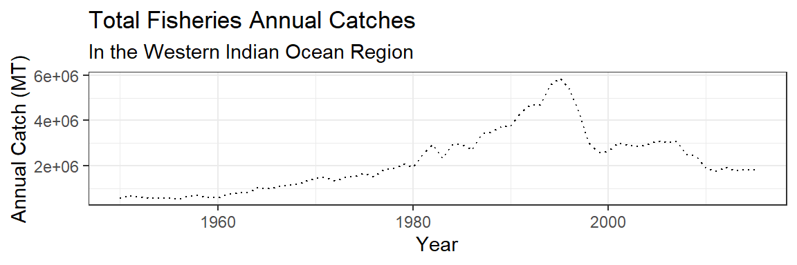
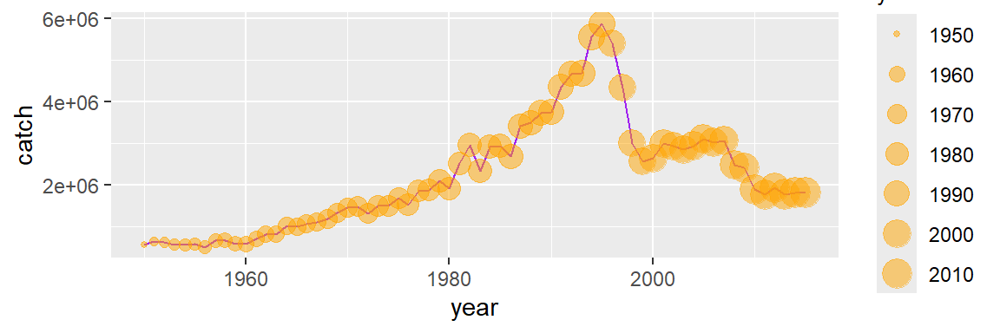
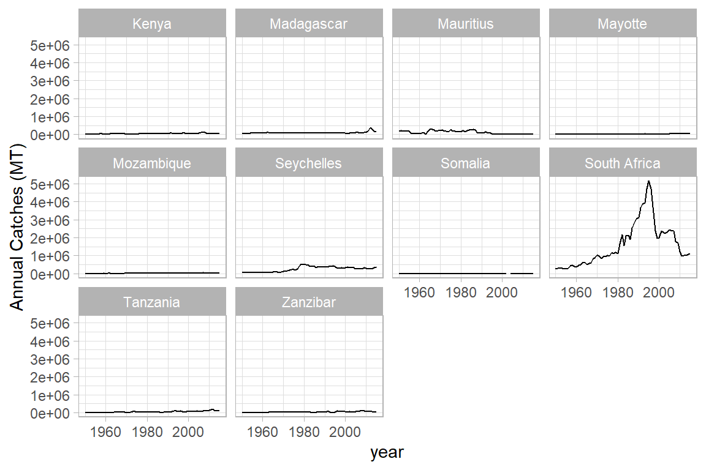

![]()
Introduction
The ability to create visualizations—graphical representations of data is an important step to convey results—information and findings to others. Visualizations make it much easier to spot aberrations in data and explain our findings to others. However, we should not reserve data visualizations exclusively for those we share the information with, but rather a practice that help to understand data quickly and particularly during the data exploratory analysis stage.
R has many systems for visualization and creating plots, some of which are—base R graphics, lattice and ggplot2, but we focus on the use of ggplot2 (Wickham, 2016). ggplot2 is the most popular data visualization package in the R community. It was created by Hadley Wickham in 2005. It was implemented based on Leland Wilkinson’s Grammar of Graphics — a general scheme for data visualization which breaks up graphs into semantic components such as scales and layers (Wickham et al., 2023). While using ggplot2, you provide the data, call specific function, map your desired variables to aesthetics, define graphical arguments, rest it will take care!.
ggplot2 is designed to build graphs layer by layer, where each layer is a building block for your graph. Making graphs in layers is useful because we can think of building up our graphs in separate parts: the data comes first, then the x-axis and y-axis, and finally other components like text labels and graph shapes. When something goes wrong and your ggplot2 code returns an error, you can learn about what’s happening by removing one layer at a time and running it again until the code works properly. Once you know which line is causing the problem, you can focus on fixing it.
We’ll use the ggplot2 package, but the function we use to initialize a graph will be ggplot, which works best for data in tidy format (i.e., a column for every variable, and a row for every observation). Graphics with ggplot are built step-by-step, adding new elements as layers with a plus sign (+) between layers (note: this is different from the pipe operator, %>%. Adding layers in this fashion allows for extensive flexibility and customization of plots. In this chapter, our objectives are;
- Read in external data (Excel files, CSVs) with
readrandreadxl - Initial data exploration
- Build several common types of graphs (scatterplot, column, line) in ggplot2
- Customize gg-graph aesthetics (color, style, themes, etc.)
- Update axis labels and titles
- Combine compatible graph types (geoms)
- Build multiseries graphs
- Split up data into faceted graphs
- Export figures with
ggsave()
Load the packages
The ggplot2 package is part of the tidyverse (Wickham and Wickham, 2017). tidyverse encapsulates the ‘ggplot2’ along with other packages for data wrangling and data discoveries. so we don’t need to load it separately. Load the tidyverse and readxl packages in the top-most code chunk of your .Rmd file.
In this chapter we will use two datasets. The first dataset is the octopus.csv, a file containing length and weight of octopus fishery gathered between 2018 and 2020 in the coastal waters of Tanzania. The dataset was obtained from the Tanzania Fisheries Research Institute. The second dataset is the landings_wio.csv, which contain historical catch landings from 1950 to 2015 of ten countries in the Western Indian Ocean Region. The dataset was downloaded from rfisheries package and arranged in structure that make plotting easy (Ram et al., 2016). The following script imports the landings_wio_country.csv dataset and displays its first ten rows.
name year catch epoch
1 Kenya 1950 19154 1960
2 Kenya 1951 21318 1960
3 Kenya 1952 19126 1960
658 Madagascar 2013 266953 2010
659 Madagascar 2014 138478 2010
660 Madagascar 2015 145629 2010We can also check the internal structure of the dataset with the glimpse function;
Rows: 660
Columns: 4
$ name <chr> "Kenya", "Kenya", "Kenya", "Kenya", "Kenya", "Kenya", "Kenya", "…
$ year <dbl> 1950, 1951, 1952, 1953, 1954, 1955, 1956, 1957, 1958, 1959, 1960…
$ catch <dbl> 19154, 21318, 19126, 20989, 17541, 19223, 23297, 28122, 28819, 2…
$ epoch <dbl> 1960, 1960, 1960, 1960, 1960, 1960, 1960, 1960, 1960, 1960, 1960…The ggplot2 basics
We will use several functions from the ggplot2 package. These functions work together to yield the desired graphs. Every ggplot2 graph starts with the function ggplot() . It basically creates the coordinate system. Over this the graphical layers are added. The first argument of this function is the input data for the intended graph. Then comes the geom functions which add the layers of plotting on the coordinate system according to its geom i.e. geom_point, geom_line, geom_bar etc.
Every geom function needs a mapping argument. This defines how the variables in the dataset are mapped to visual properties. The aesthetic function aes() is assigned to the mapping argument. The main arguments of the aes() function are axes augments-x, y and differentiating arguments like color, size, fill, alpha. The differentiating arguments become common featured arguments when they are put outside of the aes() function. ggtitle(), xlab(), ylab(), theme() these functions are used for labelling and thematic attributes.
You can find detail of these functions in the help tab by executing the command — ?function_name like ?geom_point
To create a bare-bones ggplot graph, we need to tell R three basic things:
- We’re using
ggplot2::ggplot() - Data we’re using & variables we’re plotting (i.e., what is x and/or y?)
- What type of graph we’re making (the type of geom)
Generally, that structure will look like this:
Breaking that down:
- First, tell R you’re using
ggplot() - Then, tell it the object name where variables exist (
data = df_name) - Next, tell it the aesthetics
aes()to specify which variables you want to plot - Then add a layer for the type of geom (graph type) with
geom_*()- for example,geom_point()is a scatterplot,geom_line()is a line graph,geom_col()is a column graph, etc.
Let’s illustrate these concept by creating a line graph of fish catches in the WIO region since 1950s. Since the landings dataset that we just imported has records for ten countries, we need to summarize and get the total landing in the region by years. We can achieve this by a combination of group_by and summarize function as the chunk below highlight
Table 1 display the total catch of landing in the WIO region for early 1950s and late 2010s.
year | catch | region |
|---|---|---|
1,950 | 572,743 | WIO |
1,951 | 643,877 | WIO |
1,952 | 623,655 | WIO |
2,013 | 1,780,935 | WIO |
2,014 | 1,809,121 | WIO |
2,015 | 1,810,705 | WIO |
A sample annual landing presented in Table 1 can visually presented in Figure 1, which shows the annual catch landed in the ten countries of the Western Indian Ocean Region.
ggplot(data = landing.wio,
aes(x = year, y = catch)) +
geom_line()+
coord_cartesian()+
scale_x_continuous(name = "Years", breaks = seq(1955,2016,10))+
scale_y_continuous(name = "Landed catch (MT)", labels = scales::label_number(big.mark = ","))+
labs(x = "Years",
y = "Landed Catches (MT)",
title = "Capture fisheries trend in the WIO Region",
subtitle = "The Landed catch today is far lower than 1970s",
caption = "Coursety: FAO@2022")+
theme(axis.title.x = element_blank())Let’s explore in details the key elements used to make Figure 1:
- data: The data that is in tidy form is core for plotting with ggplot2. It must be a data frame (Table 1) for ggplot2 to read and understand.
- aesthetics: is used to map the
xandyaxis for 2–dimensional plot and add thezvalue for 3–dimensionla plots. It is also used to define visual properties like color, size, shapes or height etc, and. For instance in the figure Figure 1), the position along they-axis is mapped to catch and thex- axis is mapped to year values. Other aesthetics—like size, color, shape, and transparency have been left at their default settings. - geometry; a layer which define the type of plot you want to make, whether is
histogram,boxplot,barplot,scatterplot,lineplotetc. - coordinate system: used to set a limit for the plot. The cartesian coordinate is the most familiar and common system that is widely used to zoom the plot and does not change the underlying data.
- scales: scales allows to customize the plot. For instance in Figure 1) both x and y-axis used continuous data and hence the
scale_x_continuous()andscale_y_continuous()were used to modiy the values of the axis. For color, I simply stick onscale_colour_discrete()and customize the legend name. - labels: The plot is well labelled and easy to understand. It has title, subtitle, axes and caption for the courtesy of the data.
- theme: the plot stick on the default
theme_graytheme, which has a gray background color and white gridlines, a sans serif font family, and a base font size of 11. We can customize all the propoerties in the theme to suit our standard.
Building a plot
Since you now have a clue of the different layers added to create a plot, its time to work around to create a plot with the ggplot2 package. We use the same landing.wio dataset that used to plot Figure 1. To create a data visualization using ggplot2 package, we will add layers for each of the plot elements described in Section 2.1. I will take you through step by step of the key lines needed to make such a plot. First make sure the ggplot2 or tidyverse packages are loaded in your R’s session. You can load the package with this code;
Then, to initialize plotting with ggplot2, we must call ggplot() function, which tell R that we are going to make plots, not with plot of base R but with ggplot2
The plot above is black with grey background. This is because we have not specified the data and aesthetic arguments inside the ggplot() function. Let’s specify the data, which in our case is the landing.wio and also specify the x-axis with year and y-axis with catch.

Now the plot has gridlines and axis with values and labels—x-axis show the value of years and the y-axis show the value of catches. However, there is no graphics. This is because we have not added any geom yet. Therefore, since we have already specified the data and the aesthetic values, now we can add the geom where we map the aesthetics to columns in the dataset. Let’s add the geom_line().
We’re going to be doing a lot of plot variations with those same variables. Let’s store the first line as object gg.landing so that we don’t need to retype it each time:
We notice that a line plot showing the trend of catch over time. But suppose we are not interested with the line but rather an area plot, then you simply change the geom from geom_line to geom_area
Or, we could add the point just by updating the geom_*:
We could even do that for a column graph:
We can see that updating to different geom_* types is quick, so long as the types of graphs we’re switching between are compatible. The data are there, now let’s customize the visualization and make these plots appealing.
Intro to customizing ggplot graphs
First, we’ll customize some aesthetics (e.g. colors, styles, axis labels, etc.) of our graphs based on non-variable values.
We can change the aesthetics of elements in a ggplot graph by adding arguments within the layer where that element is created.
Some common arguments we’ll use first are:
color =orcolour =: update point or line colorsfill =: update fill color for objects with areaslinetype =: update the line type (dashed, long dash, etc.)pch =: update the point stylesize =: update the element size (e.g. of points or line thickness)alpha =: update element opacity (1 = opaque, 0 = transparent)
Building on our first line graph, let’s update the line color to “purple” and make the line type “dashed”:
How do we know which color names ggplot will recognize? If you google “R colors ggplot2” you’ll find a lot of good resources. Here’s one: SAPE ggplot2 colors quick reference guide
Now let’s update the point, style and size of points on our previous scatterplot graph using color =, size =, and pch = (see ?pch for the different point styles, which can be further customized).
Mapping variables onto aesthetics
In the examples above, we have customized aesthetics based on constants that we input as arguments (e.g., the color / style / size isn’t changing based on a variable characteristic or value). Sometimes, however, we do want the aesthetics of a graph to depend on a variable. To do that, we’ll map variables onto graph aesthetics, meaning we’ll change how an element on the graph looks based on a variable characteristic (usually, character or value).
When we want to customize a graph element based on a variable’s characteristic or value, add the argument within aes() in the appropriate geom_*() layer
In short, if updating aesthetics based on a variable, make sure to put that argument inside of aes().
Example: Create a ggplot scatterplot graph where the size and color of the points change based on the catch, and make all points the same level of opacity (alpha = 0.5). Notice the aes() around the size = and color = arguments.
Also: this is overmapped and unnecessary. Avoid excessive / overcomplicated aesthetic mapping in data visualization.
In the example above, notice that the two arguments that do depend on variables are within aes(), but since alpha = 0.5 doesn’t depend on a variable then it is outside the aes() but still within the geom_point() layer.
Activity: map variables onto graph aesthetics
Create a column plot of Channel Islands National Park visitation over time, where the fill color (argument: fill =) changes based on the number of catch.
Themes in ggplot2
While every element of a ggplot graph is manually customizable, there are also built-in themes (theme_*()) that you can add to your ggplot code to make some major headway before making smaller tweaks manually.
Here are a few to try today (but also notice all the options that appear as we start typing theme_ into our ggplot graph code!):
theme_light()theme_minimal()theme_bw()
Here, let’s update our previous graph with theme_minimal():
Axis labels and titles
Use labs() to update axis labels, and add a title and/or subtitle to your ggplot graph.
gg.landing +
geom_line(linetype = "dotted") +
theme_bw() +
labs(
x = "Year",
y = "Annual Catch (MT)",
title = "Total Fisheries Annual Catches",
subtitle = "In the Western Indian Ocean Region"
)
If you want to update the formatting of axis values (for example, to convert to comma format instead of scientific format above), you can use the scales package options (see more from the R Cookbook).
Combining geoms
As long as the geoms are compatible, we can layer them on top of one another to further customize a graph. For example, adding points to a line graph:
gg.landing +
geom_line(color = "purple") +
geom_point(color = "orange",
aes(size = year),
alpha = 0.5)
Or, combine a column and line graph (not sure why you’d want to do this, but you can):
Multi-series ggplot graphs
In the examples above, we only had a single series - total annual catches in the WIO region. However, we often succum a situaton where we want to visualize multiple series. For example, rather than looking the catch at the region, we may wish to visualize catch over time for individual countries.
To do that, we need to add an aesthetic that lets ggplot know how things are going to be grouped. A demonstration of why that’s important - what happens if we don’t let ggplot know how to group things? Unfortunate, the dataset we have loaded is unable to to do that. we need to load into the session a dataset that have catch values for individual countries in the WIO region.
landing.countries = read_csv("../data/tidy/landings_wio_country.csv", skip = 4)
landing.countries %>% head()# A tibble: 6 × 4
name year catch epoch
<chr> <dbl> <dbl> <dbl>
1 Kenya 1950 19154 1960
2 Kenya 1951 21318 1960
3 Kenya 1952 19126 1960
4 Kenya 1953 20989 1960
5 Kenya 1954 17541 1960
6 Kenya 1955 19223 1960Notice that the dataset has a name variable that we can use for this case
Well that’s definitely a mess, and it’s because ggplot has no idea that these should be different series based on the different countries that appear in the name’ column of the dataset. We can make sure R does know by adding an explicit grouping argument (group =), or by updating an aesthetic based on name:
You could also add an aesthetic (color = name) in the geom_line() layer to create groupings, instead of in the topmost ggplot() layer.
Let’s store that topmost line so that we can use it aesthetic based on name:
Faceting ggplot graphs
When we facet graphs, we split them up into multiple plotting panels, where each panel contains a subset of the data. In our case, we’ll split the graph above into different panels, each containing annual catches over time for each country in the WIO.
gg_np +
geom_line(show.legend = FALSE) +
theme_light() +
labs(x = "year", y = "Annual Catches (MT)") +
facet_wrap(~ name)
Unfortunate, a South Africa plot is the only visible clearly with changes of catches over time, plots for other countries are almost flat because of the catches difference between these countries and South Africa. We can use the scale= "free" arguments in geom_facet function to control this behaviour;
Exporting a ggplot plots
If we want our graph to appear in a knitted html, then we don’t need to do anything else. But often we’ll need a saved image file, of specific size and resolution, to share or for publication. ggsave() will export the most recently run ggplot graph by default (plot = last_plot()), unless you give it the name of a different saved ggplot object. Some common arguments for ggsave():
width =: set exported image width (default inches)height =: set exported image height (default height)dpi =: set dpi (dots per inch)
So to export the faceted graph above at 300 dpi, width a width of 8” and a height of 7”, we can use:
Notice that a .jpg image of that name and size is now stored in the plots\ folder within your working directory. You can change the type of exported image, too (e.g. pdf, tiff, eps, png, mmp, svg).